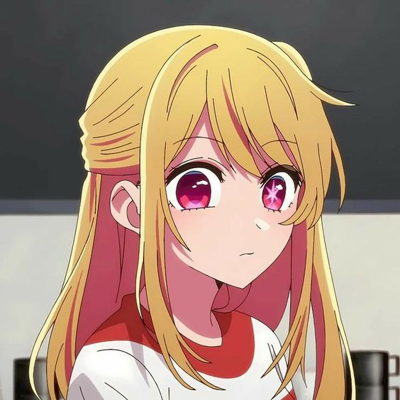

Characters/voice
Hoshino, Ruby

-
- Japanese: Igoma, Yurie
- English: Marek, Alyssa
- French: Thuilier, Coralie
Hoshino, Aquamarine

-
- Japanese: Ootsuka, Takeo / Uchiyama, Yumi
- English: Stansbury, Jack / Moore, Chaney
- French: Faliu, Martin / Darazi, Estelle
Hoshino, Ai

-
- Japanese: Takahashi, Rie
- English: Litton, Donna Bella
- French: Facundo, Marie
Arima, Kana

-
- Japanese: Han, Megumi
- English: Rial, Natalie
- French: Marot, Kelly
Taishi's Mother

-
- Japanese: Saitou, Kimiko
- English: Bannor, Marcy
- French: Cerdà, Cathy
Ryousuke

-
- Japanese: Tamaru, Atsushi
- English: Regojo, Gabriel
- French: Aubert-Carlin, Alan
Pieyon

-
- Japanese: Murata, Taishi
- English: Love, Andrew
- French: Tomassian, Alexis
Narushima, Melt

-
- Japanese: Maeda, Seiji
- English: Baugus, Bryson
- French: Brunswick, Hugo
Morimoto, Kengo

-
- Japanese: Ban, Taito
- English: Gibbs, Adam
- French: Guetat, Nessym
Mem-Cho

-
- Japanese: Ookubo, Rumi
- English: Simmons, Juliet
- French: Sablé, Audrey
Kurokawa, Akane

-
- Japanese: Iwami, Manaka
- English: McGuire, Kristen
- French: Quilichini, Clara
Kumano, Nobuyuki

-
- Japanese: Ono, Tomohiro
- English: Gibbs, Scott
- French: Colas, Fred
Kaburagi, Masaya

-
- Japanese: Terasoma, Masaki
- English: Doran, Justin
- French: Kramer, Julien
Gotanda, Taishi

-
- Japanese: Kase, Yasuyuki
- English: Mahany, Ty
- French: Rehlinger, Boris
Amemiya, Gorou

-
- Japanese: Ito, Kent
- English: Gee, Jeremy
- French: Boisseau, Damien
Tendouji, Sarina

-
- Japanese: Takayanagi, Tomoyo
- English: Menzel, Savanna
- French: Doang, Geneviève
Sumiaki, Raida

-
- Japanese: Suzumura, Kenichi
- English: Saab, Alejandro
- French: Prévost, Jérémy
Sumi, Yuki

-
- Japanese: Oonishi, Saori
- English: Swasey, Olivia
- French: Soares, Clara
Shiranui, Frill

-
- Japanese: Seto, Asami
- English: Wild, Annie
- French: Piau, Anne-Charlotte
Saitou, Miyako

-
- Japanese: Lynn
- English: Kelly, Christina
- French: Préjean, Laura
Saitou, Ichigo

-
- Japanese: Egawa, Hisao
- English: Hearnsberger, Brandon
- French: Le Minoux, Martial
Kotobuki, Minami

-
- Japanese: Youmiya, Hina
- English: Lauda, Brittany
- French: Bescht, Valérie
Kichijouji, Yoriko

-
- Japanese: Itou, Shizuka
- English: Greenshield, Kelly
- French: Nonnenmacher, Marie
Staff
- Aomura, Yousuke (Producer)
- Kamata, Hajime (Producer)
- Kobayashi, Ryou (Producer)
- Negishi, Genki (Producer)
- Yamashita, Shinpei (Producer)
- Yoshioka, Takuya (Producer)
- Hiramaki, Daisuke (Director, Episode Director, Storyboard)
- Takadera, Takeshi (Sound Director)
- Irie, Yasuhiro (Episode Director, Storyboard)
- Itou, Ryouta (Episode Director)
- Nakatani, Asami (Episode Director, Storyboard)
- Nishina, Kuniyasu (Episode Director, Storyboard)
- Tachibana, Saori (Episode Director, Storyboard, Assistant Director)
- Tokuno, Yuji (Episode Director, Storyboard)
- Yamamoto, Yuusuke (Episode Director, Storyboard, Key Animation)
- Tanaka, Jin (Script, Series Composition)
- Kakuchi, Takudai (Storyboard)
- Masunari, Koji (Storyboard)
- Nakayama, Naoya (Storyboard, Key Animation)
- Yoshikawa, Hiroaki (Storyboard)
- Avu-chan (Theme Song Lyrics, Theme Song Composition)
- Ayase (Theme Song Lyrics, Theme Song Composition, Theme Song Arrangement)
- Tsukada, Koji (Theme Song Arrangement)
- YOASOBI (Theme Song Performance)
- Ziyoou-vachi (Theme Song Performance)
- Akasaka, Aka (Original Creator)
- Arakaki, Issei (Key Animation)
- Atsumi, Tomoya (Animation Director, Key Animation, Chief Animation Director)
- Cho, Danny (Key Animation)
- Fan, Yanxin (Key Animation)
- Harada, Ayuko (Special Effects)
- Hayakawa, Asami (Key Animation, Animation Director)
- Hirayama, Kanna (Chief Animation Director, Character Design, In-Between Animation, Animation Director)
- Iga, Takurou (Music)
- Ishiguro, Kei (Color Design)
- Ishiguro, Ryo (Executive Producer)
- Itakura, Ken (Animation Director)
- Itou, Yuuki (Key Animation)
- Kabashima, Manami (Executive Producer)
- Katsumata, Masato (Chief Animation Director)
- Kawada, Kiyotaka (Sound Effects)
- Kidi (Key Animation)
- Kikuchi, Tsuyoshi (Planning)
- Kitamura, Yuuka (Key Animation)
- Kon, Kyouko (Key Animation)
- Kudou, Daijou (Planning)
- Kuroe, Rei (Key Animation)
- Kuwano, Takafumi (Director of Photography)
- Lambotte, Jessie (ADR Director)
- Lee, Min-Hee (In-Between Animation)
- Majiro (Chief Animation Director)
- Matsumoto, Miki (Chief Animation Director, Animation Director)
- Miyahara, Takuya (Key Animation)
- Mizumoto, Kouta (Background Art)
- Mizuno, Hiroaki (Key Animation)
- Mori, Hisashi (Key Animation)
- Muroga, Ayaka (Key Animation)
- Nagao, Keigo (Animation Director)
- Nakao, Kazuma (Key Animation)
- Narimatsu, Yoshito (Key Animation)
- Naruse, Ran (Key Animation, Animation Director)
- Okada, Masato (Key Animation)
- Okuda, Teppei (Key Animation)
- Oono, Tsutomu (Animation Director)
- Ooyoshi, Makoto (Planning)
- Osame, Takeshi (Animation Director, Key Animation)
- Rikuta, Kiyoki (Key Animation)
- Saitou, Keiichirou (In-Between Animation, Key Animation)
- Sawada, Kenji (Key Animation)
- Sawai, Shun (Key Animation, Character Design, Animation Director)
- Segawa, Kenji (Animation Director)
- Soga, Atsushi (Animation Director, 2nd Key Animation, Key Animation)
- Sugiyama, Kazutaka (Key Animation)
- Takahashi, Rie (Inserted Song Performance)
- Tamaki, Norihiko (Key Animation)
- Tanaka, Shou (Executive Producer)
- Tsai, Mengsu (Key Animation)
- Tsubone, Kentarou (Editing)
- Usami, Tetsuya (Art Director)
- Usui, Katsutarou (Executive Producer)
- Watanabe, Satomi (Animation Director)
- Yamamoto, Yumiko (Key Animation)
- Yamano, Masaaki (2nd Key Animation, Key Animation, Animation Director, Assistant Animation Director)
- Yamazaki, Kenji (Publicity)
- Yokoyama, Honoka (Animation Director, Key Animation)
- Yokoyari, Mengo (Original Character Design)
- Yopi (Animation Director)
- Yoshikawa, Maho (Animation Director, Chief Animation Director)
- Yufu, Kyouko (Key Animation)
- Zeng, Pinqiao (Key Animation)